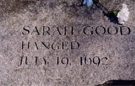

What evil spirit have you familiarity with?
None.
Have you made no contract with the devil?
No.
Why do you hurt these children?
I do not hurt them. I scorn it.
Who do you imploy then to do it?
I imploy no body.
What creature do you imploy then?
No creature. I am falsely accused.
Dialogue based on the examination of Sarah Good by Judges
Hathorne and Corwin,
from The Salem Witchcraft Papers, Book II, p.355
-
January 20
-
Nine-year-old Elizabeth Parris and eleven-year-old Abigail Williams
began to exhibit strange behavior, such as blasphemous screaming,
convulsive seizures, trance-like states and mysterious spells.
Within a short time, several other Salem girls began to demonstrate
similar behavior.
-
Mid-February
-
Unable to determine any physical cause for the symptoms and dreadful
behavior, physicians concluded that the girls were under the influence
of Satan.
-
Late February
-
Prayer services and community fasting were conducted by Reverend Samuel
Parris in hopes of relieving the evil forces that plagued them.
In an effort to expose the "witches", John Indian baked a witch cake
made with rye meal and the afflicted girls' urine. This counter-magic
was meant to reveal the identities of the "witches" to the afflicted
girls.
Pressured to identify the source of their affliction, the girls named
three women, including Tituba, Parris' Carib Indian slave, as witches.
On February 29, warrants were issued for the arrests of Tituba, Sarah
Good and Sarah Osborne.
Although Osborne and Good maintained innocence, Tituba confessed
to seeing the devil who appeared to her "sometimes like a hog
and sometimes like a great dog". What's more, Tituba
testified that there was a conspiracy of witches at work in Salem.
- March 1
-
Magistrates John Hathorne and Jonathan Corwin examined Tituba,
Sarah Good, and Sarah Osborne in the meeting house in Salem Village.
Tituba confessed to practicing witchcraft.
Over the next weeks, other townspeople came forward and testified
that they, too, had been harmed by or had seen strange apparitions
of some of the community members. As the witch hunt continued,
accusations were made against many different people.
Frequently denounced were women whose behavior or economic
circumstances were somehow disturbing to the social order and
conventions of the time. Some of the accused had previous records
of criminal activity, including witchcraft, but others were
faithful churchgoers and people of high standing in the community.
-
March 12
-
Martha Corey is accused of witchcraft.
-
March 19
-
Rebecca Nurse was denounced as a witch.
-
March 21
-
Martha Corey was examined before Magistrates Hathorne and Corwin.
-
March 24
-
Rebecca Nurse was examined before Magistrates Hathorne and Corwin.
-
March 28
-
Elizabeth Proctor was denounced as a witch.
-
April 3
-
Sarah Cloyce, Rebecca Nurse's sister, was accused of witchcraft.
-
April 11
-
Elizabeth Proctor and Sarah Cloyce were examined before Hathorne,
Corwin, Deputy Governor Thomas Danforth, and Captain Samuel Sewall.
During this examination, John Proctor was also accused and imprisoned.
-
April 19
-
Abigail Hobbs, Bridget Bishop, Giles Corey, and Mary Warren were
examined. Only Abigail Hobbs confessed.
William Hobbs
"I can deny it to my dying day."
-
April 22
-
Nehemiah Abbott, William and Deliverance Hobbs, Edward and Sarah
Bishop, Mary Easty, Mary Black, Sarah Wildes, and Mary English were
examined before Hathorne and Corwin. Only Nehemiah Abbott was
cleared of charges.
-
May 2
-
Sarah Morey, Lydia Dustin, Susannah Martin, and Dorcas Hoar were examined
by Hathorne and Corwin.
Dorcas Hoar
"I will speak the truth as long as I live."
-
May 4
-
George Burroughs was arrested in Wells, Maine.
-
May 9
-
Burroughs was examined by Hathorne, Corwin, Sewall, and William Stoughton.
One of the afflicted girls, Sarah Churchill, was also examined.
-
May 10
-
George Jacobs, Sr. and his granddaughter Margaret were examined before
Hathorne and Corwin. Margaret confessed and testified that her
grandfather and George Burroughs were both witches.
Sarah Osborne died in prison in Boston.
Margaret Jacobs
"... They told me if I would not confess I should be put down into
the dungeon and would be hanged, but if I would confess I should
save my life."
-
May 14
-
Increase Mather returned from England, bringing with him a new charter
and the new governor, Sir William Phips.
-
May 18
-
Mary Easty was released from prison. Yet, due to the outcries and
protests of her accusers, she was arrested a second time.
-
May 27
-
Governor Phips set up a special Court of Oyer and Terminer
comprised of seven judges to try the witchcraft cases.
Appointed were Lieutenant Governor William Stoughton,
Nathaniel Saltonstall, Bartholomew Gedney, Peter Sergeant, Samuel
Sewall, Wait Still Winthrop, John Richards, John Hathorne, and
Jonathan Corwin.
These magistrates based their judgments and evaluations on various
kinds of intangible evidence, including direct confessions, supernatural
attributes (such as "witchmarks"), and reactions of the
afflicted girls. Spectral evidence, based on the assumption that
the Devil could assume the "specter" of an innocent person, was
relied upon despite its controversial nature.
-
May 31
-
Martha Carrier, John Alden, Wilmott Redd, Elizabeth Howe, and Phillip
English were examined before Hathorne, Corwin, and Gedney.
-
June 2
-
Initial session of the Court of Oyer and Terminer. Bridget Bishop
was the first to be pronounced guilty of witchcraft
and condemned to death.
-
Early June
-
Soon after Bridget Bishop's trial, Nathaniel Saltonstall resigned
from the court, dissatisfied with its proceedings.
-
June 10
-
Bridget Bishop was hanged in Salem, the first official execution of
the Salem witch trials.
Bridget Bishop
"I am no witch. I am innocent. I know nothing of it."
Following her death, accusations of witchcraft escalated,
but the trials were not unopposed. Several townspeople
signed petitions on behalf of accused people they believed
to be innocent.
-
June 29-30
-
Rebecca Nurse, Susannah Martin, Sarah Wildes, Sarah Good and
Elizabeth Howe were tried for witchcraft and condemned.
Rebecca Nurse
"Oh Lord, help me! It is false. I am clear.
For my life now lies in your hands...."
-
Mid-July
-
In an effort to expose the witches afflicting his life, Joseph Ballard
of nearby Andover enlisted the aid of the accusing girls of Salem. This
action marked the beginning of the Andover witch hunt.
-
July 19
-
Rebecca Nurse, Susannah Martin, Elizabeth Howe, Sarah Good, and
Sarah Wildes were executed.
Elizabeth Howe
"If it was the last moment I was to live,
God knows I am innocent..."
Susannah Martin
"I have no hand in witchcraft."
-
August 2-6
-
George Jacobs, Sr., Martha Carrier, George Burroughs, John and
Elizabeth Proctor, and John Willard were tried for witchcraft and
condemned.
Martha Carrier
"...I am wronged. It is a shameful thing that you should mind these folks that are
out of their wits."
-
August 19
-
George Jacobs, Sr., Martha Carrier, George Burroughs, John Proctor,
and John Willard were hanged on Gallows Hill.
George Jacobs
"Because I am falsely accused. I never did it."
-
September 9
-
Martha Corey, Mary Easty, Alice Parker, Ann Pudeator, Dorcas Hoar,
and Mary Bradbury were tried and condemned.
Mary Bradbury
"I do plead not guilty. I am wholly innocent of such wickedness."
-
September 17
-
Margaret Scott, Wilmott Redd, Samuel Wardwell, Mary Parker, Abigail
Faulkner, Rebecca Eames, Mary Lacy, Ann Foster, and Abigail Hobbs were
tried and condemned.
-
September 19
-
Giles Corey was pressed to death for refusing a trial.
-
September 21
-
Dorcas Hoar was the first of those pleading innocent to confess. Her
execution was delayed.
-
September 22
-
Martha Corey, Margaret Scott, Mary Easty, Alice Parker, Ann Pudeator,
Wilmott Redd, Samuel Wardwell, and Mary Parker were hanged.
-
October 8
-
After 20 people had been executed in the Salem witch hunt,
Thomas Brattle wrote a letter criticizing the witchcraft trials.
This letter had great impact on Governor Phips, who ordered
that reliance on spectral and intangible evidence no longer
be allowed in trials.
-
October 29
-
Governor Phips dissolved the Court of Oyer and Terminer.
-
November 25
-
The General Court of the colony created the Superior Court to
try the remaining witchcraft cases which took place in May, 1693.
This time no one was convicted.
Mary Easty
"...if it be possible no more innocent blood be shed...
...I am clear of this sin."
|